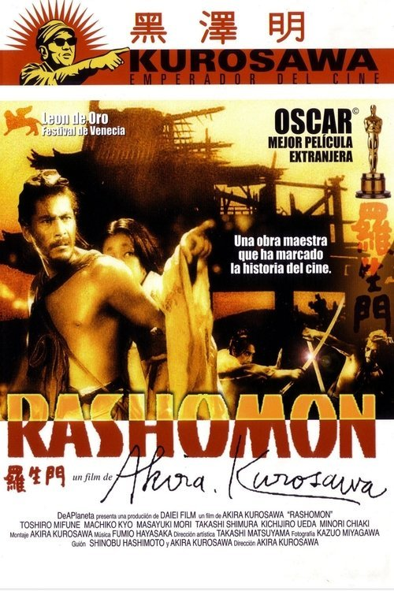

Rashomon (1950)
Sinopsis Rápida
¿Quién dice la verdad? Cuatro versiones contradictorias de un mismo crimen te dejarán cuestionando la realidad misma en este clásico del cine japonés.
Sinopsis Detallada
En la Kioto medieval, un brutal asesinato y una violación sacuden la moral de una sociedad. Bajo la protección del ruinoso templo Rashomon, un leñador, un sacerdote y un peregrino escuchan las diferentes versiones del crimen. El bandido, la viuda del asesinado y el propio muerto (mediante un médium) relatan la historia, cada uno desde su perspectiva sesgada y subjetiva, dejando al espectador la tarea de discernir la verdad. Akira Kurosawa maestramente explora los límites de la percepción y la naturaleza humana en una obra que ha trascendido el tiempo.
¿Por qué tenés que verla?
{{PUNTOS_CLAVE}}Idea Extra
Comparación de las diferentes versiones del crimen con ejemplos de la vida real donde la verdad es subjetiva.
{{CONTENIDO_RELACIONADO}}